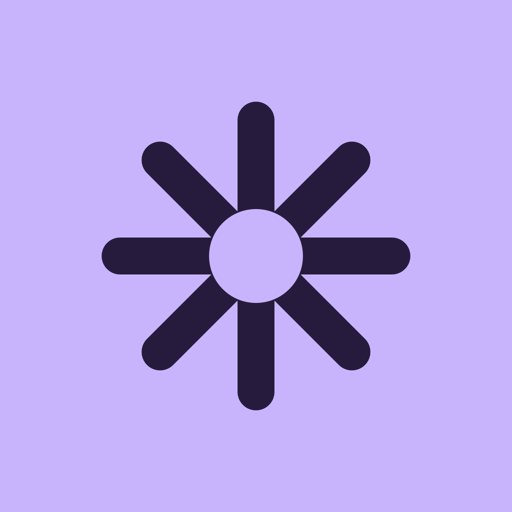
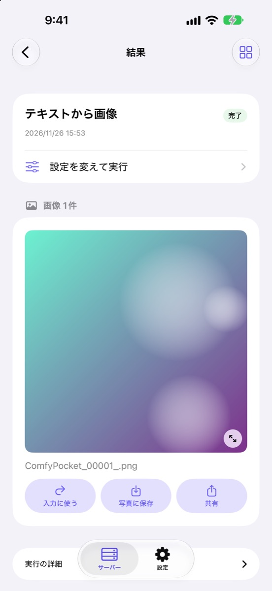
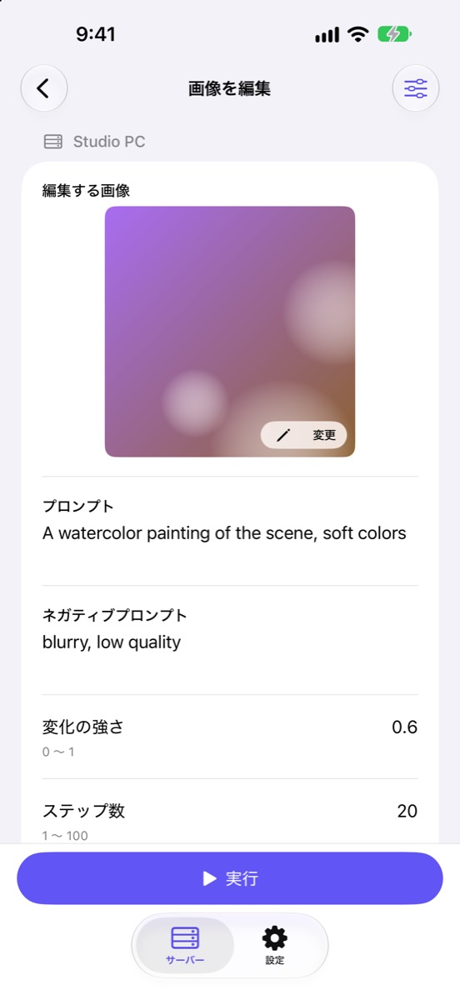

Comfy Pocket
自宅のComfyUIを、iPhone・iPadから。
PCやサーバーで動かしているComfyUIに、写真やプロンプトを送って生成するクライアントアプリです。ComfyUIで書き出したワークフローから入力画面を自動で作り、外出先でも写真を選んで実行するだけで画像生成や画像編集ができます。
スクリーンショット







画像はデモ用サーバーで撮影したサンプルです。
できること
ワークフローから入力画面を自動作成
「Export (API)」のJSONを取り込むと、プロンプト・Seed・画像などの入力欄を作ります。表示する項目や順序も調整できます。
写真を送って画像編集
写真ライブラリ・ファイル・サーバー上の画像から入力画像を選べます。
結果をそのまま次の入力に
生成した画像を「入力に使う」で、別のワークフローの画像欄に渡せます。
PCの出力フォルダーを整理
サーバーの出力や入力画像を一覧で確認し、保存・共有できます。拡張ノードを入れると削除にも対応します。
複数サーバーとロック
自宅とスタジオなど複数のComfyUIを登録し、サーバーごとにパスワードで保護できます。
データを集めない設計
アカウント不要。入力は登録したサーバーにだけ直接送信され、開発者は情報を収集しません。
ご利用に必要なもの
- ComfyUIが動いているPCまたはサーバー（このアプリ自体は画像を生成しません）
- iPhone・iPadからそのPCに届くネットワーク（同じWi-Fi、TailscaleなどのVPN、HTTPSのリバースプロキシなど）
- iOS・iPadOS 17以降
Comfy PocketはComfyUIに対応した非公式のクライアントです。ComfyUIの開発元とは関係ありません。